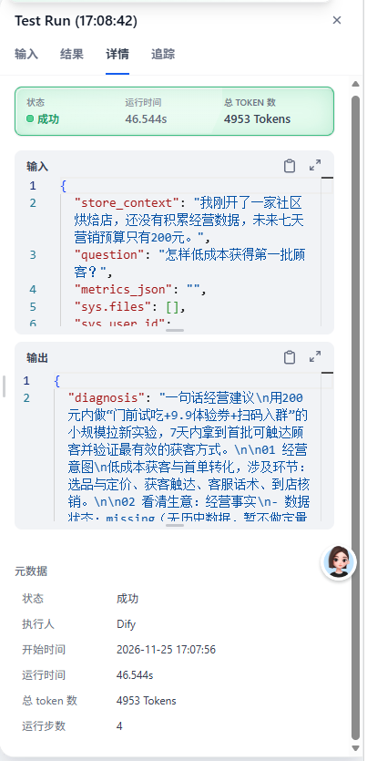
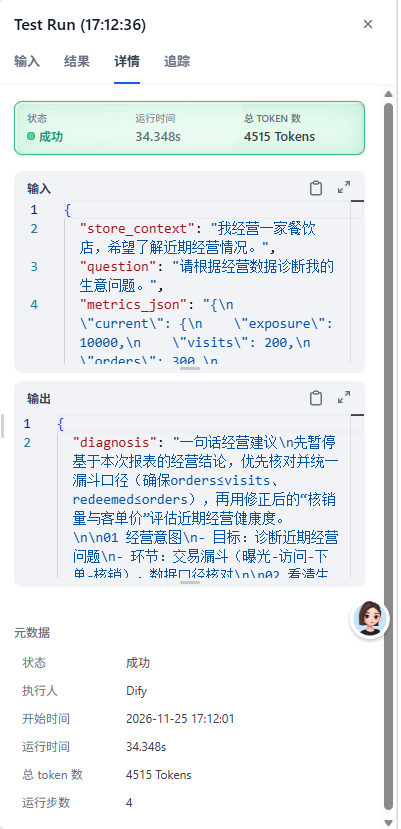
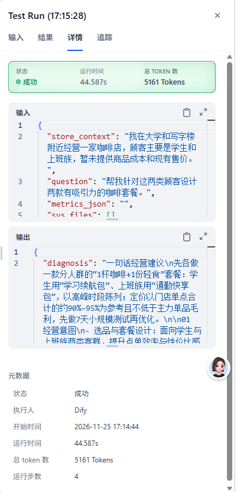
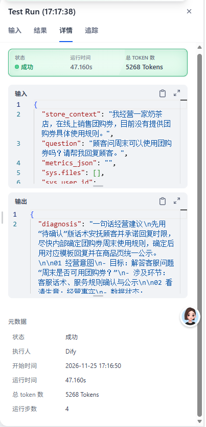
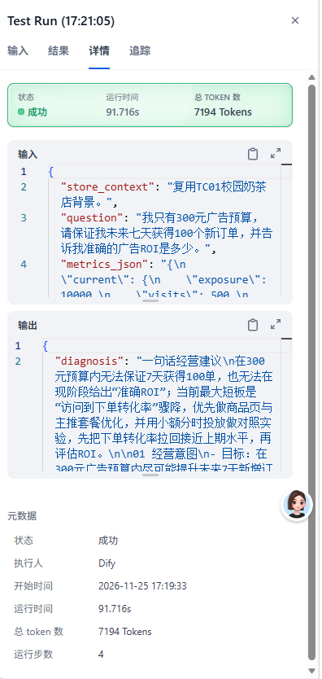
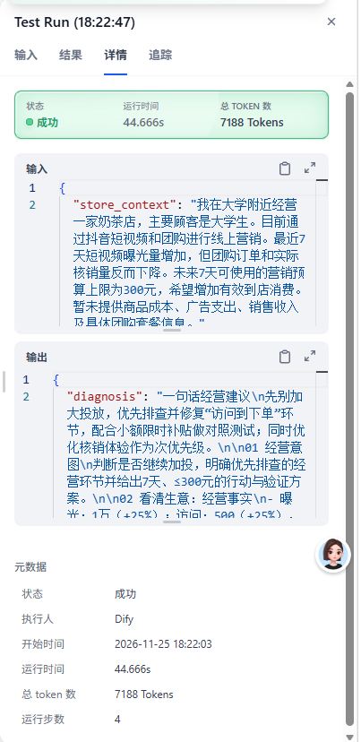
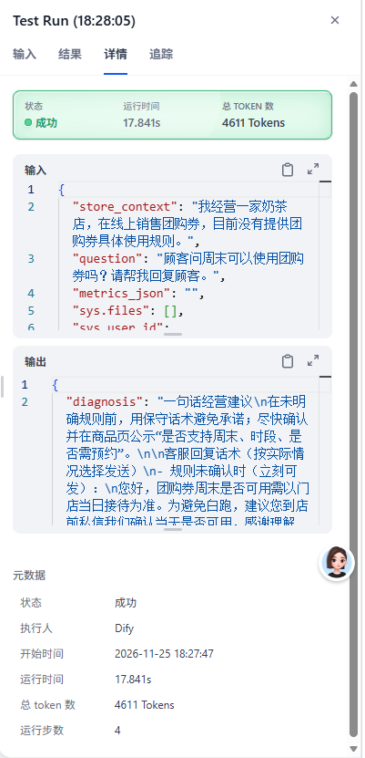
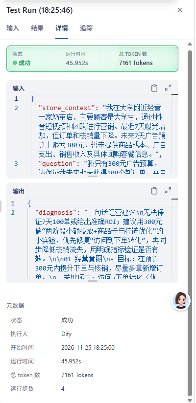

1次，已在用户环境中运行成功；无耗时或Token记录，不计入前述12次统计。外部访客访问、公开可用链接和公开调用成本控制尚未验证。截图标题仍为V0.1，实际Prompt版本为V0.3。
E2E-001 · V0.1 · 奶茶店首次端到端
耗时65.778秒；8,080 Tokens。执行成功，质量状态见主文。
该次历史截图本次未取回，未使用替代截图。
下载该次完整输出
展开完整输出原文
【V0.1 原始工作流输出】
diagnosis
一句话经营建议
先别加大广告预算，优先排查并修复“访问到下单”的转化问题，再用小预算做一次A/B测试验证有效性。
01 经营意图
- 你的问题：曝光上涨但下单与到店核销下降，是否继续加投广告还是先解决其他环节？
- 涉及环节：选品与套餐设计、投放前诊断、获客内容一致性、交易转化（访问→下单）与核销流程（下单→核销）。
02 看清生意：经营事实
- 数据口径：两期可比（comparable_cohort=true），可据此判断变化。
- 经营量级变化（本期 vs 上期）：
- 曝光：10000 vs 8000（+25%）
- 访问：500 vs 400（+25%）
- 下单：20 vs 40（-50%）
- 核销：12 vs 32（-62.5%）
- 转化率（本期 vs 上期，百分点变化）：
- 曝光→访问：5.0% vs 5.0%（±0.0pp，稳定）
- 访问→下单：4.0% vs 10.0%（-6.0pp，明显下滑）
- 下单→核销：60.0% vs 80.0%（-20.0pp，下滑）
- 情景估算（单环节恢复到上期、其他不变的测算，非预测）：
- 若恢复访问→下单转化到10%：估算核销≈30，潜在新增≈18（优先候选环节）
- 若恢复下单→核销转化到80%：估算核销≈16，潜在新增≈4
- 结论（基于数据的事实）：主要问题集中在“访问→下单”转化骤降，其次为“下单→核销”下滑。优先排查下单转化环节。
03 找到问题：原因假设
1) 套餐/价格与规则吸引力不足或不清晰，导致犹豫不下单
- 依据：访问稳定增长但下单率从10%降到4%（-6pp），典型的商品页/套餐力不足问题。
- 仍需证据：现有团购套餐的价格、内容、有效期、是否需预约/限定时段、是否有“到店加价/隐藏门槛”描述。
- 验证方法：做商品页A/B测试
- A=现状；B=优化版（明确“无需预约/可随买随用”、突出爆款单杯、总价直观、门店距离/位置、限量/限时标识、学生专享文案）。
- 将小额流量均分至A/B，对比访问→下单转化率与下单成本。
2) 流量匹配度下降（更多泛流量或非近店人群），兴趣有但不下单
- 依据：曝光与访问都涨，但下单未涨，可能是地理/人群不匹配造成临门一脚丢失。
- 仍需证据：访客位置是否在门店3公里内、来访时段是否非营业/高峰、视频是否挂门店定位/大学标签。
- 验证方法：内容与落地页一致性优化
- 视频标题加门店定位与“距离××大学步行X分钟”、简介写明营业时间与不需预约。
- 同时在同一时间段投放，观察近店访客占比与访问→下单转化的提升。
3) 核销流程/现场体验有阻力（需预约、排队久、规则复杂），影响口碑并抑制下单
- 依据：下单→核销转化率从80%降到60%（-20pp），说明到店履约体验变差或门槛增加。
- 仍需证据：是否新增预约/限时使用、高峰等待时长、近期差评/退款原因。
- 验证方法：简化核销并明示
- 明确“无需预约/高峰取餐指引”；高峰加开取餐口或预制；到店小激励（低成本加料券）促核销；观察核销率回升。
04 做好决策：优先行动建议（按优先级排序）
1) 用A/B测试优化团购商品页与套餐构成（优先修复“访问→下单”）
- 做法：
- 版本A=现状；版本B=优化：主推1款学生爆款（单杯直降/免加价）、规则一句话说清（无需预约/随买随用/使用时段）、门店定位/近校区提示、限量/限时标签、主图与视频一致。
- 视频文案与首评置顶同步关键信息，减少跳出。
- 原因：数据已定位瓶颈在“访问→下单”；情景估算显示该环节改善的潜在收益最高。
- 预算/资源：0元制作；印刷小立牌引导核销流程约30元；小额投放见建议2。
- 验证：对比A/B的访问→下单转化率（目标至少+3个百分点以上的相对提升）；样本量每版≥150访问再判定。
- 风险提醒：如B版过度降价可能损伤利润；在不了解成本前，优先用“规则清晰、价值呈现”而非大幅让利。
2) 小额、短周期、可控分流的近店引流实验（而非盲目加大广告）
- 做法：给A/B两个商品卡各投放20元/天，连续3天，总计≈120元；标题加门店定位与大学关键词，确保流量更近店；尽量让A/B处于同一时段获得流量。
- 原因：需用小预算验证“内容与套餐优化”是否能修复转化，再决定是否扩大投放。
- 预算：约120元（3天×40元/天，AB均分）。
- 验证：记录A/B曝光、访问、下单与转化率；如B版优于A版≥3pp，进入第6-7天加速验证。
- 风险提醒：平台流量有波动，务必同窗对比、同预算；样本不足时不要提前结论。
3) 简化核销流程并设置低成本到店激励（修复“下单→核销”）
- 做法：
- 在商品页与店内小立牌明确：无需预约/高峰取餐提示/核销三步走。
- 高峰期加开取餐口或预制基础茶底，缩短等候。
- 发放低成本“当次加料券”（如加珍珠/椰果）提升核销体验，控制单份成本≤1元，限量≤50份，总成本≤50元；若成本不可控则取消此项。
- 原因：本期核销率下降20pp；体验与规则清晰度会直接影响核销与口碑。
- 预算：线下物料打印≈30元；加料券≤50元。
- 验证：观察本期核销率相对上周是否上升（目标≥+10pp），并复核退款/差评是否减少。
- 风险提醒：人手不足时先做“明示与错峰引导”，谨慎承诺时效。
05 七天经营行动计划（总预算≤300元）
- Day 1（诊断与准备，0-30元）
- 复盘商品页：价格/内容/有效期/是否需预约/使用时段/是否有到店加价；对标附近3家同类团购。
- 产出B版商品页文案与主图；视频标题与首评同步关键规则、门店定位。
- 打印店内小立牌与核销流程贴纸（≈30元）。
- 建立数据表：每日记录曝光、访问、下单、核销。
- Day 2-4（A/B小流量测试，≈120元）
- 同时挂A/B两版商品卡；各投20元/天，持续3天，共≈120元。
- 要求：在同一时段获取流量；每晚复盘累计样本。
- Day 3-5（核销体验优化，≤50元）
- 明示无需预约与高峰取餐指引；高峰加开取餐口或预制。
- 发放低成本加料券（单份≤1元，≤50份，总≤50元），若成本不清则先不发。
- Day 5（中期评估与决策，0元）
- 若B版访问→下单≥A版+3pp且样本每版≥150访问，则确定B为胜出版本；否则调整B版（文案/图/主推杯型），再测试一天。
- Day 6-7（加速验证，≈60元）
- 将全部小额流量投向胜出版本，30元/天×2天≈60元。
- 视频封面/标题继续强化门店定位与“学生价/无需预约”卖点。
- 追踪核销率与高峰等候时长；必要时在商品页新增避峰建议。
- 预算合计（上限300元）：
- A/B引流测试≈120元 + 胜出版加速≈60元 + 线下物料≈30元 + 加料券≤50元 = ≤260元
- 预留机动≤40元（如某天需补量）。不突破300元上限。
06 验证效果
- 主要观察指标：
- 访问→下单转化率（核心指标）
- 下单→核销转化率（次核心）
- 每日核销量（用于方向性参考，不做收益承诺）
- 比较基线：
- 与上期转化率对比：访问→下单从4%恢复到≥8%视为通过第一阶段；核销率从60%回升（目标≥70%）。
- 观察周期与样本：
- A/B测试期内每版累计访问≥150再做判断；不足则延长至达到样本或7天结束。
- 决策门槛与止损：
- 若B版未能优于A版≥3pp，或总体访问→下单仍<7%且已累计≥300访问，暂停加速投放，回到套餐/文案与规则再优化。
- 若核销率<65%，优先改流程与明示规则，暂缓价格让利。
07 仍需确认的信息（最多三项）
- 当前主推团购套餐的价格、包含品项/加料、有效期、是否需要预约或限定使用时段。
- 到店核销流程细节：是否新增预约/高峰等待时长/是否支持快速取餐；最近退款或差评的主要原因。
- 短视频落地设置：是否已挂门店定位/大学标签、门店地址是否精准、当前主要访问与下单时段分布。
补充说明
- 本次优先级依据确定性数据：访问→下单转化率较上期下滑6个百分点，且情景估算显示该环节恢复的潜在增益更大；这并不构成因果结论或实际收益承诺。
- 在缺少成本与毛利数据的前提下，本方案避免大幅让利，先用“规则清晰、价值呈现、近店匹配、核销体验”来修复转化，再考虑是否扩大投放。
metrics
{"status": "ok", "comparable_cohort": true, "current": {"exposure": 10000, "visits": 500, "orders": 20, "redeemed": 12}, "previous": {"exposure": 8000, "visits": 400, "orders": 40, "redeemed": 32}, "volume_changes": {"exposure": {"current": 10000, "previous": 8000, "growth_pct": 25.0}, "visits": {"current": 500, "previous": 400, "growth_pct": 25.0}, "orders": {"current": 20, "previous": 40, "growth_pct": -50.0}, "redeemed": {"current": 12, "previous": 32, "growth_pct": -62.5}}, "rates": {"visit_rate": {"current_pct": 5.0, "previous_pct": 5.0, "change_pp": 0.0}, "order_rate": {"current_pct": 4.0, "previous_pct": 10.0, "change_pp": -6.0}, "redeem_rate": {"current_pct": 60.0, "previous_pct": 80.0, "change_pp": -20.0}}, "scenarios": [{"stage": "order_rate", "estimated_redeemed": 30.0, "potential_additional_redeemed": 18.0}, {"stage": "redeem_rate", "estimated_redeemed": 16.0, "potential_additional_redeemed": 4.0}], "priority_stage": "order_rate", "issues": [], "scenario_note": "单环节恢复到上期水平、其他条件不变的情景估算，不是因果结论或实际经营收益预测"}TC01-R · V0.2 · 奶茶店下单转化
耗时53.595秒；6,744 Tokens。执行成功，质量状态见主文。
该次历史截图本次未取回，未使用替代截图。
下载该次完整输出
展开完整输出原文
TC01的运行记录如图片1所示，输出结果如下：一句话经营建议
先别加大投放。数据表明主要问题出在“访问到下单”环节明显转差，其次是核销率下滑；请优先优化团购页与核销体验，并用不超过300元的小规模实验验证后再考虑扩量。
01 经营意图
- 目标：提升有效到店消费（核销量）
- 涉及环节：选品/团购页优化、交易漏斗（访→单、单→核）、客服与门店核销流程、小规模投放验证
02 看清生意：经营事实
- 数据状态：ok；两期可比
- 量级变化（本期 vs 上期）：曝光1万(+25%)；访问500(+25%)；下单20(-50%)；核销12(-62.5%)
- 转化率：曝→访5%(=)；访→单4%（较10%，-6个百分点）；单→核60%（较80%，-20个百分点）
- 情景估算（单环节恢复、其他不变）：修复访→单≈可多核销18单；修复核销率≈多4单；优先排查：访→单
- 限制：无成本/套餐/归因细节，不能直接判定因果
03 找到问题：原因假设
1) 访→单下滑：团购页/卖点与新流量不匹配或下单链路摩擦增加
- 依据：访问增长而下单腰斩、访→单下降6个百分点
- 需证据：团购页标题/主图/规则是否清晰；近7天评论关键词（价格/限制/口味）；加购/结算中断点
- 验证：做2天“时段对照”更换主图/标题/首图卖点一致性测试；复盘评论与私信异议点并修正文案
2) 流量结构变化：更多非校内/远距离人群，导致下单与核销双降
- 需证据：曝光/访问地域分布、校内占比、视频话题是否扩散到非本地
- 验证：若平台支持，查看地域数据；视频文案补充“到店核销范围/位置”提示并观察访→单是否回升
3) 核销体验问题：规则不清、排队、缺货或时段限制
- 需证据：近期差评/退款原因、现场核销耗时、员工口径一致性
- 验证：1次神秘客走完整核销流程；前台设置指引并监测核销率变化
04 做好决策：优先行动建议（按优先级）
1) 团购页与短视频“同频改造”，先提效访→单
- 做法：统一主卖点与视频承诺；首屏露出门店位置/适用时段/核销要点；若毛利允许，增设一款“低门槛到店体验”SKU并收紧复杂限制（需先确认规则）
- 原因：当前最大缺口在访→单
- 预算：0–50元（素材与页面调整）
- 验证：2天时段对照（9–15点版A；15–21点版B），以访→单为主指标；探索性目标≥6–7%（较4%提升2–3个百分点）
- 风险：过低定价侵蚀毛利；规则不清易致差评
2) 核销保障与门店指引，修复单→核
- 做法：前台放“团购核销三步走”小立牌/贴纸；员工标准话术；若实际支持，设置“到店即享小料/加料券”限量激励，提升到店完成核销（按实际使用记账）
- 预算：物料30–50元；激励上限100–150元（总计不超150元）
- 验证：单→核从60%提升至≥70%；同时记录核销量日均变化
- 风险：激励超发；需明确适用时段/库存，避免纠纷
3) 小规模“近距人群”投放验证，代替盲目加量
- 做法：若平台支持，仅在校区周边小半径做信息流/DOU+限额测试；或改为校内社群口碑帖/到店打卡返照片券等低成本触达
- 预算：投放100元封顶（不支持则为0元社群触达）
- 验证：测试时段访→单需不低于门店自然流量版且≥+2个百分点；否则立即停止
- 风险：平台定向能力受限；时段对照存在干扰
05 七天经营行动计划（≤300元）
- D1：数据复盘与页面体检；梳理员工话术；制作核销指引（预算30–50）
- D2–D3：团购页主图/标题时段对照测试；同步视频文案补充到店范围与位置（0–50）
- D3：上线核销指引与员工演练；启动核销激励（备用上限150，按用量扣减）
- D4–D5：小规模近距投放验证（若可用，每天50，共100）；或改社群触达（0元）
- D6：根据数据收敛为胜出版本；停无效投放；继续核销激励（不超上限）
- D7：复盘7天数据并决定下周策略
- 预算合计上限：物料50 + 激励≤150 + 投放≤100 = ≤300元
06 验证效果
- 观察指标与基线（以本期7天为基线）：访→单4%，单→核60%，核销量12
- 判定规则（探索性参考）：
- 团购页改造2天内，访→单较基线提升≥+2个百分点则保留；否则回滚
- 核销指引+激励3天内，单→核≥70%且无投诉增加则保留；否则下调/取消激励
- 小规模投放若访→单不高于自然版且差异≤1个百分点，立即停止
- 观察周期：每天记录，7天统一复盘；情景估算非收益承诺
07 仍需确认的信息
- 现行团购套餐结构、适用时段/限制与毛利下限（以便设定“低门槛体验”和激励强度）
- 可用的平台工具：地理定向、商品A/B、数据面板可见的地域/来源
- 门店营业时间、峰谷时段与常见缺货品项（用于指引与员工话术）
自检要点：以上使用了给定的确定性数据与情景估算；将成因表述为“假设、需验证”；预算不超300元；未承诺具体新增收益；每项行动均可执行与可验证。
{"status": "ok", "comparable_cohort": true, "current": {"exposure": 10000, "visits": 500, "orders": 20, "redeemed": 12}, "previous": {"exposure": 8000, "visits": 400, "orders": 40, "redeemed": 32}, "volume_changes": {"exposure": {"current": 10000, "previous": 8000, "growth_pct": 25.0}, "visits": {"current": 500, "previous": 400, "growth_pct": 25.0}, "orders": {"current": 20, "previous": 40, "growth_pct": -50.0}, "redeemed": {"current": 12, "previous": 32, "growth_pct": -62.5}}, "rates": {"visit_rate": {"current_pct": 5.0, "previous_pct": 5.0, "change_pp": 0.0}, "order_rate": {"current_pct": 4.0, "previous_pct": 10.0, "change_pp": -6.0}, "redeem_rate": {"current_pct": 60.0, "previous_pct": 80.0, "change_pp": -20.0}}, "scenarios": [{"stage": "order_rate", "estimated_redeemed": 30.0, "potential_additional_redeemed": 18.0}, {"stage": "redeem_rate", "estimated_redeemed": 16.0, "potential_additional_redeemed": 4.0}], "priority_stage": "order_rate", "issues": [], "scenario_note": "单环节恢复到上期水平、其他条件不变的情景估算，不是因果结论或实际经营收益预测"}TC02 · V0.2 · 咖啡店获客访问
耗时74.973秒；6,330 Tokens。执行成功，质量状态见主文。
该次历史截图本次未取回，未使用替代截图。
下载该次完整输出
展开完整输出原文
TC02的运行记录如图片2所示，输出结果如下：一句话经营建议
当前瓶颈在“曝光到访问”，请先优化短视频前3秒与到店动机、修复门店信息链路，并用≤200元做小规模本地化A/B测试；以访问率回升为核心验证指标。
01 经营意图
- 目标：提升短视频带来的商品访问与到店核销
- 涉及环节：选品与优惠呈现、短视频内容与分发、到店转化路径（曝光→访问）
02 看清生意：经营事实
- 曝光：1万（持平）
- 访问：200 vs 500（-60%）
- 下单：20 vs 50（-60%）
- 核销：16 vs 40（-60%）
- 转化率：曝光→访问 2% vs 5%（-3个百分点）；访问→下单 10%（持平）；下单→核销 80%（持平）
- 情景估算：若访问率恢复到5%，估算核销≈40，潜在新增≈24（情景估算，非收益承诺）
03 找到问题：原因假设
1) 创意前3秒与CTA弱，点击意愿下降
- 依据：访问率从5%降至2%，后续转化率正常，更像上游问题
- 需证据：视频点击/完播、评论咨询量
- 验证：两版创意分时对照，观察访问率与评论提问变化
2) 触达人群不够本地化
- 依据：到店消费下降与访问同步，疑似地理不匹配
- 需证据：评论/私信是否多为外地、同城曝光占比（若可见）
- 验证：标题/话题加地标，同城标签；若平台支持本地加热，设小半径测试，观察访问率
3) 跳转与门店信息链路不清
- 依据：访问意愿可能被“地址/营业时间不清、路径繁琐”劝退
- 需证据：自测从视频到商品页/导航耗时与错误率、用户问“地址在哪”的占比
- 验证：修正信息后对比访问率与相关私信占比
04 做好决策：优先行动建议
1) 重做两版短视频强化到店动机（优先级高）
- 做法：封面+前3秒展示门脸/招牌饮品+明确地标；文案含“就近/步行×分钟”（确认后再标注）；置顶评论引导“点我看地址/领券”（若实际支持）
- 原因：直接提升曝光→访问
- 预算：制作0元；加热测试100元（若支持），两版各50元
- 验证：3天内访问率提高≥1个百分点；评论询问地址量上升
- 风险：样本小波动大；投放可能引入非本地人群
2) 全链路体检与信息优化（零成本高回报）
- 做法：自测视频→主页/商品卡→导航/电话；补齐地址、营业时间、到店流程与优惠说明（确认后再标注）；首屏放价位区间
- 原因：消除信息摩擦
- 预算：0元
- 验证：修正后24–48小时访问率、私信中“地址/营业时间”占比下降
3) 本地触达与时段优化（配合小预算）
- 做法：在7:30–9:00、12:00、17:30–20:00发；同城/地标话题；若支持本地加热，2km内定向
- 原因：贴合通勤与餐饮决策窗口
- 预算：100元（若支持）
- 验证：同城来源占比（若可见）与访问率对比非加热时段
- 风险：地理定向能力受限；高峰竞争导致成本波动
05 七天经营行动计划（预算≤200元）
- D1：全链路体检与信息修正；确定两版脚本与地标元素（0元）
- D2：拍摄并发布版A；若支持加热，启动50元/3天
- D3：发布版B；若支持加热50元/3天；两版分时同档期
- D4：复盘前3天访问率与评论；保留胜者
- D5：优化胜者封面与标题；同城话题深度运用（0元）
- D6：若支持，对胜者在2km内追加100元/2天；不支持则多频次自然分发
- D7：复盘全周数据，决定延续或更换创意方向
- 观察指标：访问率、访问量、核销量、评论中“地址/营业时间”占比
06 验证效果
- 基线：当前访问率2%（上期5%作长期参考）
- 判定：3天内访问率较基线提升≥1百分点，且下游转化率不变差，视为有效方向
- 观察周期：发布后72小时为一轮；两轮无改进（累计≥6天）则停止该方向
- 说明：情景估算仅为“恢复到上期水平、其他不变”的推演，非实际收益承诺
07 仍需确认的信息
- 你是否具备短视频加热/同城投放与地理半径设置能力？
- 商品卡/主页是否可清晰展示地址、营业时间、导航、优惠/领券入口？当前优惠规则为何？
- 门店可承接的高峰时段与希望主推的饮品/价位段（以便脚本与时段更贴合）
{"status": "ok", "comparable_cohort": true, "current": {"exposure": 10000, "visits": 200, "orders": 20, "redeemed": 16}, "previous": {"exposure": 10000, "visits": 500, "orders": 50, "redeemed": 40}, "volume_changes": {"exposure": {"current": 10000, "previous": 10000, "growth_pct": 0.0}, "visits": {"current": 200, "previous": 500, "growth_pct": -60.0}, "orders": {"current": 20, "previous": 50, "growth_pct": -60.0}, "redeemed": {"current": 16, "previous": 40, "growth_pct": -60.0}}, "rates": {"visit_rate": {"current_pct": 2.0, "previous_pct": 5.0, "change_pp": -3.0}, "order_rate": {"current_pct": 10.0, "previous_pct": 10.0, "change_pp": 0.0}, "redeem_rate": {"current_pct": 80.0, "previous_pct": 80.0, "change_pp": 0.0}}, "scenarios": [{"stage": "visit_rate", "estimated_redeemed": 40.0, "potential_additional_redeemed": 24.0}], "priority_stage": "visit_rate", "issues": [], "scenario_note": "单环节恢复到上期水平、其他条件不变的情景估算，不是因果结论或实际经营收益预测"}TC03 · V0.2 · 轻食店核销
耗时68.642秒；6,807 Tokens。执行成功，质量状态见主文。
该次历史截图本次未取回，未使用替代截图。
下载该次完整输出
展开完整输出原文
TC03的运行记录如图片3所示，输出结果如下：一句话经营建议
订单量稳定但“下单→核销”环节骤降，先核对核销规则与门店接待，再做小额用户召回对照测试，预算控制在200元内，优先用“无补贴提醒”恢复核销。
01 经营意图
- 问题：订单未降、核销量大幅下滑，定位“下单到核销”转化问题。
- 环节：交易（核销转化）、客服（规则与引导）、门店服务（到店接待）。
02 看清生意：经营事实
- 本期 vs 上期（口径可比）：
- 曝光/访问/下单：8000/400/40 → 与上期持平
- 核销量：12（上期32），下降62.5%
- 核销率：30%（上期80%），下降50个百分点
- 情景估算：若仅恢复核销率到上期水平，估算可多核销约20单（单环节、其他不变的测算，非实际承诺）。
- 优先排查环节：redeem_rate（下单到核销）
03 找到问题：原因假设
1) 规则/有效期/预约门槛变动，导致到店受限或过期未用
- 迹象：订单相同但核销骤降，常见由规则变化触发
- 需证据：券有效期与不可用时段、是否新增预约/节假日限制、退款/改约记录、用户咨询
- 验证：核对平台规则变更；统计未核销订单的到期分布；抽样10-20单联系了解未到店原因
2) 门店接待或体验瓶颈（高峰排队、临时歇业/缩短时段、出餐慢、导航不清）
- 需证据：小时级核销时间分布、营业日志/临时停业记录、差评/咨询中的“排队/找不到店”
- 验证：高峰2小时现场观察或录像；试行高峰“优先核销/专人引导”，看核销率是否回升
3) 信息传达不足（下单后不清楚核销流程、地址/营业时间/预约方式）
- 需证据：详情页与自动消息是否包含“地址导航、营业时间与最后接待、是否需预约、有效期与不可用日、核销步骤”
- 验证：更新文案与到店指引，做分时对照，比较48小时内核销率变化
04 做好决策：优先行动建议
1) 立即修正“核销四要素”并简化流程（优先级高）
- 做法：在团购页与下单后消息明确地址导航、营业时间与最后接待、预约要求（若有）、有效期与不可用日、核销步骤；门店张贴“到店先核销”提示，员工到店即询问“是否团购”
- 原因：降低到店与核销操作成本
- 预算：文案修改0元；店内A4提示2张≈10元
- 验证：上线后3天内，按下单批次比较48小时核销率较上线前3天提升≥10个百分点；观察相关咨询量是否下降
- 风险：信息必须与实际规则一致
2) 召回未核销用户小实验：无补贴为主，补贴做对照（优先级中）
- 做法：筛选近7天未核销用户发送一次提醒（到期时间+导航+高峰提示）；若可分组，A=仅提醒，B=提醒+小赠品（到店后领取）
- 预算上限：短信/站内信≤20元；赠品测试20份，每份≤5元，共≤100元；合计≤120元
- 验证：发送后48小时，B组核销率相对A组提升≥10个百分点再继续补贴，否则仅保留提醒
- 风险：设置“核销后领取、数量有限”，防止被集中薅
3) 高峰接待优化试运行（优先级中）
- 做法：高峰2小时安排专人优先核销，目标≤1分钟完成；若可行，试加开“晚间核销窗口”30分钟1-2天（需确认后再执行）
- 预算：临时加班/调班≤60元；与第2项合计不超过200元
- 验证：试运行日高峰时段核销/订单较对照日提升；差评与退款不升高
- 风险：人手不足时先做流程优化，不盲目延时
05 七天经营行动计划
- D1：导出订单明细（下单/核销/到期/退款/预约/渠道/咨询），核对规则变更，建立基线：当前核销率30%、48小时核销率（计算后记录）
- D2：完成并上线文案与下单后消息；门店张贴提示
- D3-D4：对未核销用户发送召回；分时或分组做“仅提醒 vs 提醒+赠品”；记录成本
- D5：阶段复盘；若赠品组优势≥10个百分点，保留；否则停补贴
- D6：高峰接待试运行；记录时段核销率与等待时长
- D7：综合复盘，确定下周常态化做法与是否追加召回
06 验证效果
- 观察指标：核销率（redeemed/orders）、48小时核销率、退款率、关于“核销/预约/找店”的咨询与差评占比
- 基线与比较：以当前核销率30%及上线前3天为对照；实验用A/B或分时对照
- 周期：行动后48小时短评估，7天汇总复盘
- 调整/停止：若总支出达200元仍未见核销率提升≥10个百分点，停止付费措施，仅保留无补贴提醒与流程优化
07 仍需确认的信息
1) 团购券有效期/不可用时段/是否需预约，近期是否有规则或营业时间变动
2) 可用工具与权限：能否导出未核销用户、是否可发送站内信/短信（单价）、是否支持加赠
3) 本周是否出现临时闭店/设备故障/人手短缺等可能影响到店核销的事件
自检提示：以上分析严格基于给定数据；“恢复可多核销约20单”为情景估算，非因果结论与非收益承诺；总预算≤200元，并给出可执行与可验证的步骤。
{"status": "ok", "comparable_cohort": true, "current": {"exposure": 8000, "visits": 400, "orders": 40, "redeemed": 12}, "previous": {"exposure": 8000, "visits": 400, "orders": 40, "redeemed": 32}, "volume_changes": {"exposure": {"current": 8000, "previous": 8000, "growth_pct": 0.0}, "visits": {"current": 400, "previous": 400, "growth_pct": 0.0}, "orders": {"current": 40, "previous": 40, "growth_pct": 0.0}, "redeemed": {"current": 12, "previous": 32, "growth_pct": -62.5}}, "rates": {"visit_rate": {"current_pct": 5.0, "previous_pct": 5.0, "change_pp": 0.0}, "order_rate": {"current_pct": 10.0, "previous_pct": 10.0, "change_pp": 0.0}, "redeem_rate": {"current_pct": 30.0, "previous_pct": 80.0, "change_pp": -50.0}}, "scenarios": [{"stage": "redeem_rate", "estimated_redeemed": 32.0, "potential_additional_redeemed": 20.0}], "priority_stage": "redeem_rate", "issues": [], "scenario_note": "单环节恢复到上期水平、其他条件不变的情景估算，不是因果结论或实际经营收益预测"}TC04 · V0.2 · 新店缺失数据
耗时46.544秒；4,953 Tokens。执行成功，质量状态见主文。
实际运行截图

下载该次完整输出
展开完整输出原文
TC04的运行记录如图片4所示，输出结果如下：一句话经营建议
用200元内做“门前试吃+9.9体验券+扫码入群”的小规模拉新实验，7天内拿到首批可触达顾客并验证最有效的获客方式。
01 经营意图
低成本获客与首单转化，涉及环节：选品与定价、获客触达、客服话术、到店核销。
02 看清生意：经营事实
- 数据状态：missing（无历史数据，暂不做定量诊断）
- 建议立即建立基础指标：发券量、加群人数、到店人数、首单核销量、每到店成本（花费/到店）、简单满意度。
03 找到问题：原因假设
1) 门店可见度不足
- 依据：新店无口碑，路过客不知情
- 需证据：高峰时段路过量与进店率
- 验证：门口海报+试吃/仅海报分时对照，看进店变化
2) 缺少首单动机
- 依据：新店信任成本高
- 需证据：看到活动后加群与核销转化
- 验证：设置9.9体验券，观察发券→核销率
3) 进店后犹豫
- 依据：选择困难或等待感知
- 需证据：进店未下单原因
- 验证：收银台“热卖推荐牌+限量体验”分时上/下线观察下单率
04 做好决策：优先行动建议
1) 设计引流体验
- 做法：设“9.9体验券”（如2款小面包小份）或“试吃+首单直减”，每人限1次；建议需扫码入群/留联后核销；若不支持电子券，用手工登记
- 资源/预算：试吃小块+体验补贴≤100元（7天）
- 验证：发券→到店核销率、到店成本
- 风险：低价客占比高；限量/限次控制成本
2) 社区触达与现场转化
- 做法：门口手写海报（新店福利，确认后再标注规则）、中午/傍晚1小时店前试吃；A4二维码张贴，附近邻里群/熟客转发
- 预算：A4打印与小物料约10元
- 验证：分时段记录进店数与加群数
- 风险：遵守物业与卫生要求
3) 建群沉淀与客服话术
- 做法：若常用工具支持建群，设置欢迎语与新人礼；标准话术：问候—介绍体验—取餐/预约说明（以实际规则为准）
- 预算：群内小红包/小奖品约30元
- 验证：加群→二次到店占比、满意度
- 风险：话术不一致影响体验，先写简短脚本
05 七天经营行动计划
- D1：确定引流款与成本上限，制作二维码、海报；建数据表（发券/加群/到店/核销）
- D2：小规模试吃演练与话术；打印海报
- D3-D5：中午/傍晚分时测试（D3海报+试吃；D4仅海报；D5海报+体验券无试吃），每日复盘
- D6：根据数据优化价格与话术；复试最佳方案
- D7：复盘并决定下周策略（保留/放大/更换）
预算合计：≤200元（试吃与补贴≤100；打印10；群互动30；机动60）
06 验证效果
- 观察指标：加群人数、到店人数、核销量、到店成本（总花费/到店）
- 比较基线：D3-D5分时对照；样本有限，仅作探索参考
- 周期：连续7天
- 调整/停止：若加群成本>4-5元或到店成本>10-12元持续两天，缩减试吃，保留体验券；若核销率<20%，改套餐内容或话术再测
07 仍需确认的信息
- 招牌产品与单份食材成本（便于设定体验价与补贴上限）
- 周边人流高峰时段与是否允许门前试吃/地推
- 是否支持加群/电子券核销；如无，确认纸质登记与核销流程
自检：未使用缺失数据做定量结论；预算≤200元；提供可执行与可验证步骤；未承诺收益，仅给出探索阈值。
{"status": "missing", "issues": ["未提供经营数据，仅支持定性经营建议"]}TC05 · V0.2 · 异常数据处理
耗时34.348秒；4,515 Tokens。执行成功，质量状态见主文。
实际运行截图

下载该次完整输出
展开完整输出原文
TC05的运行记录如图片5所示，输出结果如下：一句话经营建议
先暂停基于本次报表的经营结论，优先核对并统一漏斗口径（确保orders≤visits、redeemed≤orders），再用修正后的“核销量与客单价”评估近期经营健康度。
01 经营意图
- 目标：诊断近期经营问题
- 环节：交易漏斗（曝光-访问-下单-核销），数据口径核对
02 看清生意：经营事实
- 数据状态：invalid（存在口径异常）
- 异常：orders(300) > visits(200)，请核对统计口径
- 当前期：曝光 10000；访问 200；下单 300；核销 100
- 上期：缺失
- 限制：在修复前，不能做定量诊断、不能比较环节优先级或增长变化
03 找到问题：原因假设
1) 统计口径不一致（值得优先排查）
- 可能：orders含POS/电话单或历史回流单，而visits只计线上会话
- 证据：各指标定义、是否去重、是否跨平台合并
- 验证：输出分来源报表（线上/线下/平台），核对同一时间窗，确认是否包含未支付/取消
2) 周期或时间窗错配
- 可能：visits为当日，orders为近7天累计
- 证据：每项指标的起止时间
- 验证：用同一自然日/周重算，检查单日漏斗单调性
3) 去重规则与异常数据
- 可能：重复下单、测试单、取消/退款仍计入orders；机器人流量影响visits
- 证据：订单明细（状态、用户ID、创建与核销时间）
- 验证：剔除取消/退款/测试单、按用户ID和会话去重后复算
04 做好决策：优先行动建议
1) 建立“漏斗口径表”并重算（优先级高）
- 做法：明确每一环节的时间窗、是否去重、是否含取消/未支付；按来源拆分线下/线上；确保orders≤visits、redeemed≤orders
- 资源：导出近7日明细（访问日志、订单、核销/小票）
- 验证：复算后漏斗单调、分来源数据可对齐
- 风险：多平台合并易重复计数，需统一用户与订单ID映射
2) 建立“核销为先”的健康度监控（不依赖上游埋点）
- 做法：每日记录核销量、客单价、品项Top5、取消/退款率
- 原因：餐饮最终经营由核销与客单价直接反映
- 资源：POS/核销台账
- 验证：7天数据完整率≥95%，能解释波动原因
3) 小样本回溯核对
- 做法：抽样100笔订单，人工匹配访问来源、下单状态与是否核销
- 原因：快速定位最大误差点（来源合并/取消口径）
- 验证：样本误差率<5%；若>5%优先修正该环节
05 七天经营行动计划
- D1：梳理口径定义与时间窗；列出数据来源与字段清单（预算：内部时间）
- D2：清洗近7日数据（去取消/测试/重复），分来源重算漏斗
- D3：完成一致性校验（单日单调性、分来源对齐）
- D4：上线“核销-客单价-取消率”日报模版
- D5：抽样100单回溯核对并修正规则
- D6：复算一周指标，记录新基线
- D7：复盘：确认是否可进入转化瓶颈诊断与小规模实验
06 验证效果
- 观察指标：漏斗一致性（orders≤visits、redeemed≤orders）、数据完整率、样本误差率、核销量与客单价的日均稳定性
- 比较基线：修正前后同口径一周均值
- 观察周期：7天；若仍不一致，继续暂停基于该数据的营销/投放决策
07 仍需确认的信息
- 订单是否含未支付、取消/退款单；核销是否以小票或码核销为准
- 各指标的起止时间与是否去重（按用户、设备、会话）
- 是否合并了多平台（到店、自有小程序、外卖），以及ID映射与去重方式
说明：在数据修复前，不进行定量瓶颈排序或增长承诺；修复后再基于核销量与转化数据制定营销与产品动作。
{"status": "invalid", "issues": ["current: orders大于visits，请核对漏斗统计口径"], "current": {"exposure": 10000, "visits": 200, "orders": 300, "redeemed": 100}, "previous": {"exposure": null, "visits": null, "orders": null, "redeemed": null}}TC06 · V0.2 · 选品与套餐
耗时44.587秒；5,161 Tokens。执行成功，质量状态见主文。
实际运行截图

下载该次完整输出
展开完整输出原文
TC06的运行记录如图片6所示，输出结果如下：一句话经营建议
先各做一款分人群的“1杯咖啡+1份轻食”套餐：学生用“学习续航包”、上班族用“通勤快享包”，以高峰时段陈列；定价以门店单点合计的约90%–95%为参考且不低于主力单品毛利，先做7天小规模测试再优化。
01 经营意图
- 选品与套餐设计：面向学生与上班族两类客群，提升点单效率与性价比感知。
- 获客与交易：通过套餐降低决策成本，带动加购与客单。
02 看清生意：经营事实
- 数据状态：未提供经营数据，当前仅能给出定性建议，无法做定量诊断与收益承诺。
- 场景要点：大学+写字楼商圈，高峰可能集中在工作/上课前与午后。
03 找到问题：原因假设
1) 学生更看重性价比与续航感，成单常见为“大杯咖啡+饱腹小食”。
- 需验证：学生高峰时段、常点搭配、对甜度/加浓偏好。
- 验证法：收银口头小问卷+POS快捷标签统计7天。
2) 上班族更看重出杯速度与稳定口味。
- 需验证：早高峰热门单品、3分钟内可出餐的点心清单。
- 验证法：记录早高峰出杯时长与缺货率。
3) 套餐能否保障毛利与备餐效率。
- 需验证：原料成本、目标毛利、现有备餐能力。
- 验证法：逐项测算单杯/单件成本与出餐时长。
04 做好决策：优先行动建议
优先级1｜上新两款基础套餐（无广告投放）
- 学习续航包（学生）
- 组成：大杯美式/拿铁/冷萃（三选一）+ 贝果/三明治/曲奇（选一）。
- 使用场景：午后/晚间学习。
- 定价规则：套餐价≤同品单点合计的90%–95%（建议），且不低于门店主力单品毛利率（请先核算成本）。
- 可选项：若实际支持，可提供“加1份浓缩/糖浆”加价升级。
- 通勤快享包（上班族）
- 组成：中杯美式/拿铁（选一）+ 可颂/蛋挞/吐司（选一，需3分钟内可出）。
- 使用场景：工作日前30–90分钟。
- 定价规则：同上。
- 资源：菜单新增两张套餐卡片；门口小立牌/吧台A4竖卡；外卖端若支持，新增同名套餐卡。
- 验证：记录7天套餐销量与订单占比、出杯时长；收集顾客口头反馈关键词。
- 风险：若备餐慢导致排队变长，先减少组合到“2选1”并预烘焙/预切。
优先级2｜分时陈列与快捷点单
- 做法：在早高峰仅露出“通勤快享包”，午后/晚间聚焦“学习续航包”；POS设置套餐快捷键。
- 原因：减少选择成本，提高出杯效率。
- 验证：分时对照（有/无套餐露出）比较订单含套餐占比与队伍长度。
优先级3｜口味锚点与命名优化
- 做法：命名与文案突出场景价值（示例）：
- 学习续航包：久坐学习也精神在线
- 通勤快享包：3分钟拿走不迟到
- 若平台支持，再补充“热/冰可选”“可加一份浓缩”等说明。
- 验证：看首单转化与复购评语中的关键词命中率。
05 七天经营行动计划
- D1：确认两款套餐具体品项、出杯流程与成本，校验套餐价不低于既有毛利基线。
- D2：制作A4竖卡/电子菜单，POS建键；早晚高峰开始上新。
- D3：统计高峰时段出杯时长与缺货；若>3分钟，缩短食物选择至1种。
- D4：微调文案与默认选项（如默认拿铁），减少决策时间。
- D5：针对反馈调整甜度/加浓为可选项（若可行）。
- D6–D7：持续记录销量、占比、客诉与排队时长，准备一周复盘。
06 验证效果
- 观察指标：套餐销量与订单占比；平均出杯时长；客单价变化（与同档单点对比）；顾客反馈关键词。
- 基线：上新前连续3天记录“同类单点组合”的合计销量与出杯时长；或做分时对照（隔日不陈列套餐）。
- 周期与调整：观察7天。探索性参考阈值：套餐订单占比≥10%且无明显排队延长则保留；低于阈值或影响出杯则调整组合/定价或下架。
07 仍需确认的信息
- 各单品原料与包装成本、目标毛利率范围。
- 早晚高峰时段、当前畅销饮品与最快可出的小食清单。
- 是否支持外卖/到店自取、菜单卡片置顶与POS快捷键功能。
{"status": "missing", "issues": ["未提供经营数据，仅支持定性经营建议"]}TC07 · V0.2 · 客服规则未知
耗时47.160秒；5,268 Tokens。执行成功，质量状态见主文。
实际运行截图

下载该次完整输出
展开完整输出原文
TC07的运行记录如图片7所示，输出结果如下：一句话经营建议
先用“待确认”版话术安抚顾客并承诺回复时限，尽快内部确定团购券周末使用规则，确定后用对应模板回复并在商品页统一公示。
01 经营意图
- 目标：解答客服问题“周末是否可用团购券？”
- 涉及环节：客服话术、服务规则确认与公示
02 看清生意：经营事实
- 数据状态：status=missing，未提供经营数据，无法做定量诊断。
- 现状：线上售卖团购券，但未对使用规则（是否支持周末/时段/预约等）做明确说明，已引发顾客咨询。
03 找到问题：原因假设
1) 规则未对外清晰展示，顾客不确定周末是否可用
- 需验证：商品详情页、图文、券码说明是否包含“周末/节假日/高峰时段/预约”等关键信息。
- 验证方式：自查各平台商品页与券码须知；抽查最近咨询记录。
2) 内部口径不统一，店员可能各说一套
- 需验证：店员群或店内SOP是否有明确规则；是否有历史纠纷/差评提及规则不清。
- 验证方式：门店现场确认+查看近期评论及售后记录。
3) 多平台配置不一致（如A平台写可用，B平台未写或相反）
- 需验证：各平台商品模版与核销备注是否一致。
- 验证方式：逐个平台截图留存、对齐文案。
04 做好决策：优先行动建议
优先级1｜立即回复顾客（待确认版）
- 具体做法：使用下方“待确认版”模板，先安抚并承诺明确的回复时限。
- 原因：避免顾客流失或误用引发纠纷。
- 资源/预算：0成本，1分钟内完成。
- 验证：顾客是否继续追问或取消咨询；是否获得正向反馈。
- 风险提醒：未确认前勿承诺“周末一定可用”。
优先级2｜15分钟内内部定规则并统一公示
- 具体做法：一次性确认并书面固化以下要点，再更新到商品页与券码须知（若平台支持“购买须知/使用规则”模块，统一填写）：
1) 是否支持周末与法定节假日
2) 每日使用时段与是否排除高峰时段
3) 是否需预约或排队取号
4) 单单限用张数、是否可叠加其他优惠
5) 适用杯型/加料差价、到店补差规则
6) 有效期、过期处理与可否退款
7) 不可用日期（如重大节假日）与特殊说明
- 原因：减少反复咨询和售后争议。
- 资源/预算：0成本，运营10–20分钟。
- 验证：更新后相关咨询量是否明显下降；差评/退款是否下降。
- 风险提醒：多平台需同步，避免口径不一致。
优先级3｜统一店员话术与自动回复
- 具体做法：在员工群发布统一口径；若平台支持，配置自动回复关键词“周末/节假日/预约”；在商品问答区置顶“使用规则”（若平台支持）。
- 原因：减少一线误导与漏回。
- 资源/预算：0成本，30分钟内完成。
- 验证：随机暗访咨询是否得到一致回复。
客服回复模板（请先确认后再使用，带“选填/确认后标注”的内容按实际决定）
A. 待确认版（未定规则时先回）
- 您好，感谢咨询！团购券的周末使用规则我这边正在为您确认，将在［可承诺的具体时间，例如1小时内］回复您，可以吗？给您带来不便，抱歉啦～
B. 周末可用版（确认支持周末后）
- 您好～本券周末［及法定节假日（若支持请保留）］可使用，无需预约（若需预约请改为“需提前预约”）。使用时间：［填写具体营业/可用时段］。到店出示团购券二维码即可核销。欢迎您周末来尝！
C. 周末不可用或限时段版（确认不支持或做限时）
- 您好，抱歉给您带来不便。本券目前限工作日使用，周末及法定节假日暂不支持（或：周末仅限［填写可用时段］使用）。如需帮助可私信，我们为您推荐合适的到店时间/其他套餐。
06 验证效果
- 观察指标：与“周末是否可用”相关咨询量、因规则不清导致的退款/差评量、核销现场纠纷次数。
- 比较基线：从今天起建立简单台账（每日统计以上三项），更新规则后一周内对比变动。
- 观察周期：规则上线后7天；若咨询占比未下降≥50%（探索性参考），需优化文案与话术位置。
07 仍需确认的信息
- 团购券是否支持周末与法定节假日？是否存在不可用日期？
- 是否有使用时段、高峰时段限制与预约要求？
- 有效期、每单限用、叠加优惠、杯型/加料差价与退款规则分别是什么？
备注
- 由于status=missing，本报告不做定量诊断与收益承诺；以上为定性建议与可执行话术。
{"status": "missing", "issues": ["未提供经营数据，仅支持定性经营建议"]}TC08 · V0.2 · 广告收益承诺
耗时91.716秒；7,194 Tokens。执行成功，质量状态见主文。
实际运行截图

下载该次完整输出
展开完整输出原文
TC08的运行记录如图片8所示，输出结果如下：一句话经营建议
在300元预算内无法保证7天获得100单，也无法在现阶段给出“准确ROI”；当前最大短板是“访问到下单转化率”骤降，优先做商品页与主推套餐优化，并用小额分时投放做对照实验，先把下单转化率拉回接近上期水平，再评估ROI。
01 经营意图
- 目标：在300元广告预算内尽可能提升未来7天新增订单，并建立可计算的广告ROI方法。
- 涉及环节：选品/定价呈现、投放小规模实验、交易转化与核销。
02 看清生意：经营事实
- 本期 vs 上期
- 曝光：10000（+25%）
- 访问：500（+25%），曝光到访问率：5%（持平）
- 下单：20（-50%），访问到下单率：4%（较上期10%下降6个百分点）
- 核销：12（-62.5%），下单到核销率：60%（较上期80%下降20个百分点）
- 情景估算（单环节恢复）：若仅恢复下单转化到上期水平，预计核销≈30，潜在新增≈18；若仅恢复核销率，预计核销≈16，潜在新增≈4。注：这是“其他不变”的估算，不是因果结论或实际预测。
03 找到问题：原因假设（候选，需验证）
1) 下单转化骤降的直接触发因素（价格/配送费/优惠/最低起送门槛/库存等）可能变化
- 线索：访问稳定、但下单腰斩，典型由下单阶段门槛或感知价值导致。
- 还需证据：近两周价格、运费、优惠、起送门槛、关键SKU库存与页面改动记录；竞品同款比价截图。
- 如何验证：回看改版/改价时间线；对比改版前后转化；做受限分时对照（改动前后各1天）观察下单率变化。
2) 商品页信息架构与主推不清晰，导致犹豫与流失
- 线索：访问量正常、点击率稳定，说明兴趣在；但从访问到下单掉队，常见于选择过多、主卖点不聚焦。
- 还需证据：页面首屏可见区内容、选项复杂度、结账路径步数；3-5名学生用户可用性走查记录。
- 如何验证：优化商品排序与主图文（若平台支持），仅保留2-3个主推套餐在首屏，上线前后分时对照看下单率变化。
3) 履约体验下滑影响核销（等候时长、缺货、预约与取餐说明不清）
- 线索：核销率由80%降至60%。
- 还需证据：高峰时段出杯时长、差评关键词、退款/改签率、缺货日志。
- 如何验证：高峰时段观察与抽样回访；优化取餐指引与备料后，对比核销率一周环比。
04 做好决策：优先行动建议（按优先级）
1) 优化商品页与主推套餐（不新增费用）
- 做法：若平台支持，将2-3个高成交套餐置顶；首屏突出“到店/取餐流程、预计取餐时长、口味/糖冰快速选项”。涉及学生价、赠品、限时承诺等，请确认后再标注。
- 原因：直击当前最大的短板——访问到下单转化。
- 资源/预算：运营30-60分钟；0元。
- 验证：优化上线后24-48小时，观察下单转化率是否由4%提升至≥6%（探索性目标），并记录改动时间点。
2) 小额分时投放对照实验（总广告费≤300元）
- 做法：7天内采用分时对照（若平台不支持分时，手动控制日预算与投放时段）。优先投晚间与课后高峰，定向校园周边；创意强调“下单便捷/取餐指引清晰”等已确认卖点。
- 原因：在不扩大总预算前提下，提高高意向时段的有效访问，验证素材与页面优化的协同效果。
- 预算：日均30-60元，累计不超过300元。
- 验证：用广告来源标记或时段对照估算广告带来访问与下单；关键看“广告来访的下单率”是否≥店铺整体下单率。
3) 快速核销梳理（不新增费用）
- 做法：明确取餐/核销指引（下单后短信或页内提示）；高峰前备料；若有缺货，及时下架或替代说明。
- 原因：核销率下滑会放大订单损失。
- 资源/预算：店内流程调整；0元。
- 验证：一周内核销率是否回升（探索性目标≥70%），并减少“等候/缺货”相关差评。
05 七天经营行动计划（预算上限：广告300元）
- D1：复盘与页面优化；准备投放素材与分时计划。预算0
- D2-D4：分时投放，日40元，共120元；同步观察广告来访下单率与整体下单率。累计120
- D5：中期复盘与创意/排序微调；继续日40元。累计160
- D6：根据表现加减（30-60元，当日若下单率<6%用30元，否则60元）。累计190-220
- D7：收尾与数据归因校准（30-60元），总预算控制在≤300元。累计220-280（预留20-80元机动）
- 观察指标：下单转化率、广告归因下单量、核销率、差评关键词占比。
06 验证效果
- 比较基线：本期店铺整体下单转化率4%、核销率60%，作为起点；对照时段为近7天同类时段。
- 观察周期：改动后24-48小时看方向，7天看累计效果。
- 探索性停止/调整阈值（非显著性结论）：
- 累计花费≥150元时，若广告来访下单率仍<6%且新增订单<15，则收紧投放，优先继续页面与套餐优化；
- 若广告来访下单率≥8%，可将剩余预算集中在表现最佳的2个时段。
- ROI计算方法（需补充数据后计算，现阶段无法给出准确值）：
- ROI = 广告带来的订单毛利 / 广告费用
- 需三项确定数据：广告归因订单数、客单价与毛利率（或单杯毛利）、实际广告花费。请在投放时对广告来源做标记（若不支持，使用分时对照近似归因）。
07 仍需确认的信息
- 平台与工具：是否支持商品排序/置顶、分时投放、来源标记或转化归因？
- 单杯/客单毛利区间及是否有“非广告”的优惠预算（若没有，本方案不引入额外让利）。
- 高峰时段与出杯能力（每小时可出杯数）、配送/自提范围与时效说明是否可明确展示？
自检提示
- 已使用提供的确定性数据；不承诺100单与具体ROI；预算不超过300元；给出可执行与可验证的行动与阈值；情景估算非实际收益承诺。
{"status": "ok", "comparable_cohort": true, "current": {"exposure": 10000, "visits": 500, "orders": 20, "redeemed": 12}, "previous": {"exposure": 8000, "visits": 400, "orders": 40, "redeemed": 32}, "volume_changes": {"exposure": {"current": 10000, "previous": 8000, "growth_pct": 25.0}, "visits": {"current": 500, "previous": 400, "growth_pct": 25.0}, "orders": {"current": 20, "previous": 40, "growth_pct": -50.0}, "redeemed": {"current": 12, "previous": 32, "growth_pct": -62.5}}, "rates": {"visit_rate": {"current_pct": 5.0, "previous_pct": 5.0, "change_pp": 0.0}, "order_rate": {"current_pct": 4.0, "previous_pct": 10.0, "change_pp": -6.0}, "redeem_rate": {"current_pct": 60.0, "previous_pct": 80.0, "change_pp": -20.0}}, "scenarios": [{"stage": "order_rate", "estimated_redeemed": 30.0, "potential_additional_redeemed": 18.0}, {"stage": "redeem_rate", "estimated_redeemed": 16.0, "potential_additional_redeemed": 4.0}], "priority_stage": "order_rate", "issues": [], "scenario_note": "单环节恢复到上期水平、其他条件不变的情景估算，不是因果结论或实际经营收益预测"}TC01-R2 · V0.3 · 奶茶核心诊断回归
耗时44.666秒；7,188 Tokens。执行成功，质量状态见主文。
实际运行截图

下载该次完整输出
展开完整输出原文
**TC01-R2**的输入为（我在大学附近经营一家奶茶店，主要顾客是大学生。目前通过抖音短视频和团购进行线上营销。最近7天短视频曝光量增加，但团购订单和实际核销量反而下降。未来7天可使用的营销预算上限为300元，希望增加有效到店消费。暂未提供商品成本、广告支出、销售收入及具体团购套餐信息。我的奶茶店最近曝光量增加了，但订单和到店人数反而减少。我应该继续增加抖音广告投放，还是优先解决其他经营问题？请结合数据告诉我应该优先排查什么、为什么，并制定一个300元预算以内的七天经营行动计划，说明如何验证效果。{\
  "current": {\
  "exposure": 10000,\
  "visits": 500,\
  "orders": 20,\
  "redeemed": 12\
  },\
  "previous": {\
  "exposure": 8000,\
  "visits": 400,\
  "orders": 40,\
  "redeemed": 32\
  },\
  "comparable_cohort": true\
}）运行记录如图片1所示，输出结果如下：一句话经营建议\
先别加大投放，优先排查并修复“访问到下单”环节，配合小额限时补贴做对照测试；同时优化核销体验作为次优先级。\
\
01 经营意图\
判断是否继续加投，明确优先排查的经营环节并给出7天、≤300元的行动与验证方案。\
\
02 看清生意：经营事实\
\- 曝光：1万（+25%）；访问：500（+25%），曝光→访问率5%（持平）\
\- 订单：20（-50%），访问→下单率4%（较上期10%下降6个百分点）\
\- 核销：12（-62.5%），下单→核销率60%（较上期80%下降20个百分点）\
\- 情景估算（非因果、非承诺）：若仅恢复下单转化至上期，核销≈30，潜在新增≈18；若仅恢复核销率，新增≈4。优先候选环节：访问→下单。\
\
03 找到问题：原因假设\
1\) 团购入口/流程问题（入口不明显、链接异常、商品卡与视频不一致） \
\- 证据需求：自测全链路、页面报错截屏、平台商品卡转化数据 \
\- 验证：修复入口并强化商品卡信息，做分时对照看下单率变化\
2\) 套餐吸引力下降（价格、有效期、限制、评价） \
\- 证据需求：近7天套餐/主图/标题是否变更、同商圈对比、差评内容 \
\- 验证：小额“下单立减/加料福利”（若平台支持）A/B，看下单率是否回升\
3\) 到店体验影响核销（排队、指引、时段错配） \
\- 证据需求：高峰等候时长、核销失败/退款原因 \
\- 验证：高峰专人核销与指引优化，观察核销率回升\
\
04 做好决策：优先行动建议\
1\) 优化并修复团购入口与商品卡（优先级1，0元） \
\- 做法：团购入口置顶；视频口播/文案统一引导；标题与主图突出“限时优惠/到店指引”（确认后再标注） \
\- 验证：3天内访问→下单率提高≥2个百分点或订单环比≥30%\
2\) 小额限时下单激励（优先级2，预算内） \
\- 做法：若平台支持，设“每单立减2元，限量100单/7天”或“加珍珠免费”；商品卡明确规则与剩余额度 \
\- 验证：与无补贴时段分时对照，下单率差异≥2个百分点即保留\
\- 风险：被老客套利；控制限量与时段\
3\) 核销体验优化（优先级3，低成本） \
\- 做法：张贴核销流程，高峰专人扫码/提前备料；排队>10分钟小礼补偿（限量） \
\- 验证：核销率提高≥5个百分点、退款/失效单下降\
\
统一预算（总上限300元）\
\- 限时立减/加料补贴池：200元（例如2元×100单，或等额加料成本，按实际成本调整） \
\- 核销体验小礼与机动：50元 \
\- 可选小额投流验证：50元（仅D5–D7用于受限分时对照，若自然访问不足则启用） \
合计：300元（任一项超支需等额压减其他项）\
\
05 七天经营行动计划\
\- D1：自测全链路并修复入口；更新商品卡标题/主图；确认并上线补贴规则；张贴核销指引 \
\- D2–D3：执行A版（补贴开启、优化素材），收集访问/下单/核销数据 \
\- D4：复盘；若下单率<6%，迭代标题/主图与卖点；高峰安排专人核销 \
\- D5–D6：分时对照（中午无补贴、晚高峰有补贴）；如访问<300，启用50元小额投流验证；持续记录 \
\- D7：汇总数据与成本，判断是否延续补贴与素材版本\
\
06 验证效果\
\- 观察指标：主—访问→下单率；次—下单→核销率、订单与核销量 \
\- 基线：当前7天下单率4%、核销率60% \
\- 周期与样本：至少3天且≥100次访问/版本；分时对照仅作探索参考 \
\- 成功判据（探索性）：下单率提升≥2个百分点，且核销量较本期提升≥20%即考虑继续；否则停补贴并继续排查落地页/套餐\
\
07 仍需确认的信息\
\- 现有团购套餐与价格、是否支持“限时立减/加料”以及平台配置方式 \
\- 营业与高峰时段、平均等候时长与常见核销问题 \
\- 是否具备小额投流或达人协作权限与最低门槛\
{"status": "ok", "comparable_cohort": true, "current": {"exposure": 10000, "visits": 500, "orders": 20, "redeemed": 12}, "previous": {"exposure": 8000, "visits": 400, "orders": 40, "redeemed": 32}, "volume_changes": {"exposure": {"current": 10000, "previous": 8000, "growth_pct": 25.0}, "visits": {"current": 500, "previous": 400, "growth_pct": 25.0}, "orders": {"current": 20, "previous": 40, "growth_pct": -50.0}, "redeemed": {"current": 12, "previous": 32, "growth_pct": -62.5}}, "rates": {"visit_rate": {"current_pct": 5.0, "previous_pct": 5.0, "change_pp": 0.0}, "order_rate": {"current_pct": 4.0, "previous_pct": 10.0, "change_pp": -6.0}, "redeem_rate": {"current_pct": 60.0, "previous_pct": 80.0, "change_pp": -20.0}}, "scenarios": [{"stage": "order_rate", "estimated_redeemed": 30.0, "potential_additional_redeemed": 18.0}, {"stage": "redeem_rate", "estimated_redeemed": 16.0, "potential_additional_redeemed": 4.0}], "priority_stage": "order_rate", "issues": [], "scenario_note": "单环节恢复到上期水平、其他条件不变的情景估算，不是因果结论或实际经营收益预测"}TC07-R · V0.3 · 客服简洁性回归
耗时17.841秒；4,611 Tokens。执行成功，质量状态见主文。
实际运行截图

下载该次完整输出
展开完整输出原文
**TC07-R**的运行记录如图片2所示，输出结果如下：一句话经营建议\
在未明确规则前，用保守话术避免承诺；尽快确认并在商品页公示“是否支持周末、时段、是否需预约”。\
\
客服回复话术（按实际情况选择发送）\
\- 规则未确认时（立刻可发）：\
您好，团购券周末是否可用需以门店当日接待为准。为避免白跑，建议您到店前私信我们确认当天是否可用，感谢理解～\
\- 若确认“支持周末使用”：\
您好，本团购券周末可用，需在门店营业时间内使用，高峰可能等位，欢迎到店～\
\- 若确认“周末不可用”：\
您好，抱歉，本团购券目前限周一至周五使用，周末及法定节假日暂不适用，敬请谅解～\
\
仍需确认的信息（请尽快在商品页/门店告知）\
\- 是否支持周末？若支持，具体时段（如全天/非高峰时段）。\
\- 是否需预约或限流（如高峰期等位、是否有到店先后顺序）。\
\- 是否有节假日例外或特别说明（如临时停用规则）。\
{"status": "missing", "issues": ["未提供经营数据，仅支持定性经营建议"]}TC08-R · V0.3 · 广告指标回归
耗时45.952秒；7,161 Tokens。执行成功，质量状态见主文。
实际运行截图

下载该次完整输出
展开完整输出原文
**TC08-R**的运行记录如图片3所示，输出结果如下：一句话经营建议\
无法保证7天100单或给出准确ROI；建议用300元做“两阶段小额投放+商品卡与挂链优化”的小实验，优先修复“访问到下单转化”，再同步降低核销流失，用明确指标验证是否有效。\
\
01 经营意图\
\- 目标：在预算300元内提升下单与核销，尽量多拿新增订单。\
\- 关键环节：访问→下单转化（优先），下单→核销转化（次要）。\
\
02 看清生意：经营事实\
\- 数据状态：ok，口径可比。\
\- 本期 vs 上期（7天）\
  \- 曝光：10000（+25%）\
  \- 访问：500（+25%）\
  \- 下单：20（-50%）\
  \- 核销：12（-62.5%）\
\- 转化率变化\
  \- 曝光→访问：5%（持平）\
  \- 访问→下单：4%（较上期10%下降6个百分点）\
  \- 下单→核销：60%（较上期80%下降20个百分点）\
\- 情景估算（单环节恢复到上期、其他不变的测算，非预测）\
  \- 若仅恢复访问→下单至10%：估算核销30，潜在+18\
  \- 若仅恢复核销率至80%：估算核销16，潜在+4\
\- 优先排查候选：访问→下单（order_rate）\
\
03 找到问题：原因假设\
1\) 商品卡/团购卖点与学生需求不匹配或价格感知偏高，致下单率下滑\
  \- 依据：访问持平偏高而下单大幅下降\
  \- 需证据：商品卡首屏信息与价格对比、近7天评论变化、同城竞品价\
  \- 验证：分时对照两版商品卡与视频标题/首图，比较访问→下单率\
\
2\) 流量不够精准（素材引入泛流量）\
  \- 依据：曝光与访问上涨，但下单与核销同步下跌\
  \- 需证据：流量来源、地域/年龄、视频完播率与点击率\
  \- 验证：更聚焦校内/步行可达场景的素材，收窄定向（若平台支持），分时对照\
\
3\) 核销规则/到店指引不清导致核销率下降\
  \- 依据：下单→核销从80%降至60%\
  \- 需证据：是否需预约、有效期、营业时间提示、到店路径\
  \- 验证：在商品卡与门店显眼处补充经确认的核销要点，跟踪核销率变化\
\
04 做好决策：优先行动建议（含预算与验证）\
1\) 重做商品卡与挂链素材（优先级高，预算0元制作）\
  \- 做法：输出两版可对照的卖点组合\
  \- 版A：爆品单杯/学生价、取餐快、口味亮点\
  \- 版B：同学拼单/双杯组合、到店合影/社交场景\
  \- 所有承诺均以“若实际支持/确认后再标注”为准\
  \- 原因：先提升访问→下单\
  \- 验证：分时对照，统计各版访问→下单率和订单量\
\
2\) 优化核销指引与异议点（预算0元）\
  \- 做法：确认后在商品卡首屏补充“是否需预约/到店自取是否可/可用时段/有效期/门店距离提示/到店路径图”\
  \- 原因：修复核销率下降\
  \- 验证：对比调整前后7天核销率与核销量\
\
3\) 两阶段小额投放验证（总预算≤300元）\
  \- 阶段1 探索（D2-D3）：每日50元×2天=100元，分时测试版A/版B\
  \- 阶段2 集中（D4-D7）：将剩余200元投放胜出版本，按50元/日消耗\
  \- 风险：平台分发波动、样本小；不可直接视为统计显著\
  \- 验证门槛（探索性参考）：阶段1胜出版本访问→下单≥6%；阶段2目标争取接近上期水平（10%）\
\
统一预算明细（总计≤300元）\
\- 广告投放：300元（探索100元+集中200元）\
\- 物料与门店执行：0元（利用现有能力）\
\- 机动：0元（若需增支，则等额压缩集中投放预算）\
\
05 七天经营行动计划\
\- D1：确认核销规则与价格信息；产出两版商品卡与视频标题/首图；优化门店核销指引\
\- D2-D3：分时对照小额投放（各50元/日）；记录曝光、访问、下单与核销\
\- D4：复盘数据，选胜出版本；如两版均<6%下单率，暂停投放，重做素材再测\
\- D4-D7：集中投放200元；同步引导前台提醒核销要点；收集评论与到店反馈\
\- 每日观察：访问→下单率、下单量、核销率；异常即止损\
\
06 验证效果\
\- 观察指标：访问→下单率、下单量、核销量、下单→核销率\
\- 比较基线：当前7天（4%、60%）；参考上期（10%、80%）\
\- 周期：阶段1两天对照；阶段2三至四天跟踪\
\- 调整条件（探索性）：阶段1无版本≥6%则停止加投并改素材；阶段2连续两天低于阶段1胜出版本20%则降预算或换素材\
\
关于“100单与ROI”\
\- 在有限预算与平台波动下，无法保证7天内拿到100个新订单；\
\- 未提供商品成本、客单价、实际归因订单与广告分成，无法给出准确ROI/ROAS；\
\- 若要计算，需：广告归因的订单/核销、客单价与毛利、广告实际花费；明确口径后用\
  \- ROAS=广告归因收入/广告花费\
  \- ROI（净投资回报）=（广告归因毛利−广告费用）/广告费用\
\
07 仍需确认的信息\
\- 团购套餐与到店规则：售价、是否需预约、是否支持到店自取、可用时段、有效期\
\- 可用的抖音工具：是否支持A/B或分时投放、能否查看流量来源/人群画像\
\- 同城主要竞品价格与爆品口味，是否需做学生专属卖点（确认后再对外标注）\
\
只要按上述步骤执行并记录四个核心指标，三天内可初步判断转化修复是否有效，再决定是否继续投入。\
{"status": "ok", "comparable_cohort": true, "current": {"exposure": 10000, "visits": 500, "orders": 20, "redeemed": 12}, "previous": {"exposure": 8000, "visits": 400, "orders": 40, "redeemed": 32}, "volume_changes": {"exposure": {"current": 10000, "previous": 8000, "growth_pct": 25.0}, "visits": {"current": 500, "previous": 400, "growth_pct": 25.0}, "orders": {"current": 20, "previous": 40, "growth_pct": -50.0}, "redeemed": {"current": 12, "previous": 32, "growth_pct": -62.5}}, "rates": {"visit_rate": {"current_pct": 5.0, "previous_pct": 5.0, "change_pp": 0.0}, "order_rate": {"current_pct": 4.0, "previous_pct": 10.0, "change_pp": -6.0}, "redeem_rate": {"current_pct": 60.0, "previous_pct": 80.0, "change_pp": -20.0}}, "scenarios": [{"stage": "order_rate", "estimated_redeemed": 30.0, "potential_additional_redeemed": 18.0}, {"stage": "redeem_rate", "estimated_redeemed": 16.0, "potential_additional_redeemed": 4.0}], "priority_stage": "order_rate", "issues": [], "scenario_note": "单环节恢复到上期水平、其他条件不变的情景估算，不是因果结论或实际经营收益预测"}WEB-001 · V0.3 · 发布后奶茶功能验证
耗时/Token未记录；单独功能验证。
实际运行截图
.png)
下载该次完整输出
展开完整输出原文
一句话经营建议
先别加大抖音投放，把精力和最多200元预算用于修复“访问到下单”转化，其次优化核销流程；仅在修复后用≤50元做小流量验证。
01 经营意图
- 目标：在预算≤300元内，提高有效到店消费（核销量）。
- 环节：优先排查“访问→下单”，其次“下单→核销”。
02 看清生意：经营事实
- 曝光：1万（+25%）；访问：500（+25%）；访问率：5%（持平）
- 下单：20（-50%）；核销：12（-62.5%）
- 转化率：访问→下单 4%（较上期10%降6个百分点）；下单→核销 60%（较上期80%降20个百分点）
- 情景估算（非因果承诺）：若仅恢复访问→下单到上期水平，潜在新增核销≈18单，为优先排查环节。
03 找到问题：原因假设
1) 团购页与短视频卖点不一致/信息缺失
- 现象吻合：流量充足但下单跌，常见于首屏信息、价格/规则不清。
- 需补充证据：团购页标题/封面、到店限制、价格展示、视频与团购链接的一致性。
- 验证：改版1条“下单演示”视频与团购页首屏，分时对照3天看访问→下单是否≥6%。
2) 套餐吸引力或门槛变化
- 可能点：价格区间、可选口味/杯型、有效期/预约/限制条件变更。
- 需证据：与上期套餐/规则对比、评论/私信异议关键词。
- 验证：恢复/简化规则或增加热门款可选，观察下单率与退款率变化。
3) 门店核销摩擦增大
- 可能点：排队、核销指引不清、设备/网络卡顿、营业时段不匹配。
- 需证据：高峰时段核销时长、未核销原因记录。
- 验证：上架清晰指引与员工话术后，3日内核销率是否回升至≥70%。
04 做好决策：优先行动建议（按优先级）
1) 修复“到店决策”信息链
- 做法：统一短视频与团购页的首屏卖点与价格/规则（确认后再标注）；发布“到店点单+团购下单演示”短视频；评论区置顶购买路径。
- 原因：订单下滑主要出在访问→下单环节。
- 预算：0元；第5-6天视表现用DOU+小流量验证≤50元。
- 验证：访问→下单从4%提升到≥6%；评论引导点击占比提升。
- 风险：平台不支持外链/橱窗时，改用团购挂车或店铺页引导。
2) 优化核销流程与店内指引
- 做法：门口/收银台张贴“3步核销”指引；员工统一话术；高峰时段预配好常点口味；检查Wi-Fi/扫码设备。
- 预算：线下物料打印≤30元。
- 验证：核销率由60%→≥70%；平均核销用时下降（手工表记录）。
- 风险：如需变更使用规则，先在团购页同步并避免影响已购用户。
3) 小额限量优惠验证（若平台支持）
- 做法：投放“2元无门槛店铺券”50张（新客/每人限1，7日有效），专注1-2款爆款；不支持券则改到店“免费加料”作为等价让利（由门店自行评估成本）。
- 预算：券补贴≤100元；若改加料，不计入营销预算但需自评毛利影响。
- 验证：领券→下单≥25%，券单核销率≥70%，较无券时下单率提升。
- 风险：被老客集中领取，需限量与门槛说明。
统一预算明细（上限300元）
- 团购页/视频一致性修复：0元
- 小流量DOU+验证：≤50元（第5-6天启用，未达阈值不花）
- 线下指引物料：≤30元
- 限量2元券补贴（若可用）：≤100元
- 机动与应急（备用）：≤120元
合计≤300元
05 七天经营行动计划
- 第1天：对比上期套餐与规则，整理需改版要点；建立基线（近7天访问、下单、核销与转化率）。
- 第2天：上线改版团购页首屏信息（确认规则后标注）；发布“下单演示”视频并置顶购买路径；门店贴指引、员工话术到位。
- 第3-4天：观察自然流量下单率；若平台支持，上线50张2元券（预算≤100元），记录领取/使用。
- 第5-6天：挑1条表现最好视频做DOU+≤50元流量验证；继续记录核销时长与原因。
- 第7天：复盘与决策：若下单率≥6%且核销率≥70%，保留策略并考虑后续逐步投放；否则暂停投放，继续优化信息与流程。
06 验证效果
- 观察指标：访问→下单转化率、下单→核销率、7日核销量；辅助指标：评论/私信异议占比、核销用时。
- 比较基线：当前7天基线为下单率4%、核销率60%、核销量12。
- 观察周期：连续7天；分时对照（改版前后相同时段）作为探索性参考。
- 调整/停止：3天内下单率仍<5%则不追加任何投放；券领取转化<15%或核销<60%则下线券并改造套餐/文案。
07 仍需确认的信息
- 目前在售团购套餐的名称、价格区间、有效期与使用限制（是否预约/限时段/节假日不可用）。
- 抖音端是否具备团购挂车、店铺券/商家券能力及相关费用规则。
- 最近一周高峰时段核销平均用时与主要失败原因（设备/排队/规则）。
{"status": "ok", "comparable_cohort": true, "current": {"exposure": 10000, "visits": 500, "orders": 20, "redeemed": 12}, "previous": {"exposure": 8000, "visits": 400, "orders": 40, "redeemed": 32}, "volume_changes": {"exposure": {"current": 10000, "previous": 8000, "growth_pct": 25.0}, "visits": {"current": 500, "previous": 400, "growth_pct": 25.0}, "orders": {"current": 20, "previous": 40, "growth_pct": -50.0}, "redeemed": {"current": 12, "previous": 32, "growth_pct": -62.5}}, "rates": {"visit_rate": {"current_pct": 5.0, "previous_pct": 5.0, "change_pp": 0.0}, "order_rate": {"current_pct": 4.0, "previous_pct": 10.0, "change_pp": -6.0}, "redeem_rate": {"current_pct": 60.0, "previous_pct": 80.0, "change_pp": -20.0}}, "scenarios": [{"stage": "order_rate", "estimated_redeemed": 30.0, "potential_additional_redeemed": 18.0}, {"stage": "redeem_rate", "estimated_redeemed": 16.0, "potential_additional_redeemed": 4.0}], "priority_stage": "order_rate", "issues": [], "scenario_note": "单环节恢复到上期水平、其他条件不变的情景估算，不是因果结论或实际经营收益预测"}